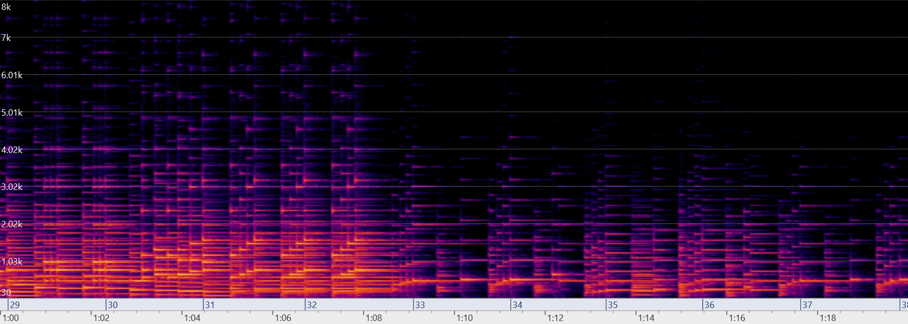

Spectrogram and chromagram
The question: what does the sound look like, and which pitch classes sound when?
Spectrogram (S)

12345- Bright horizontal stripes low down: the notes' fundamentals and strongest partials.
- Stripes above them: overtones. A loud or bright tone reaches higher.
- The upper partials vanish at 1:08.6. The sound becomes thinner and softer.
- Thin horizontal lines: frequency marks (kHz). They are a scale, not part of the sound.
- Vertical edges: note onsets.
Up is higher frequency, colour is level. Use it to see brightness, attacks, pedal haze and noise. It is the wrong view for harmony: the twelve pitch classes are scattered over many octaves.
Chromagram (C)
 12345
12345- The bright D that opens the piece.
- The same bright D at 2:00, bar 59: the reprise.
- B and C alternate in the middle part, 1:09 to 1:26, while D is almost absent: a different key.
- F♯ holds from 1:51: the dominant of B major.
- Thin lines between rows only separate the pitch classes.
Each row is a pitch class (all the Cs together, and so on); brightness is its share of the energy. Here you can see keys and returns by eye. The view has its own settings (register, tuning, channel) under View, Settings, and shows up to 240 seconds at a time.
| Looks like | What it is | How to read and use it |
|---|---|---|
| Thin grey or white horizontal lines | Scale marks: frequencies in the spectrogram, borders between pitch classes in the chromagram. | |
| Colour | Spectrogram: level in dB. Chromagram: the share of a moment's energy in that pitch class; white means half of it or more. | |
| Black column in the chromagram | Inactive: the sound is below the gate (-60 dBFS). |